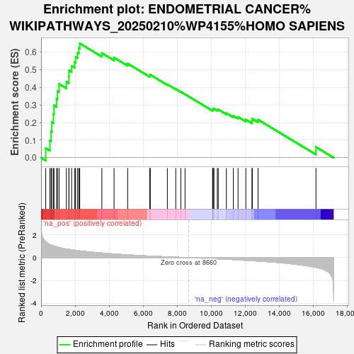
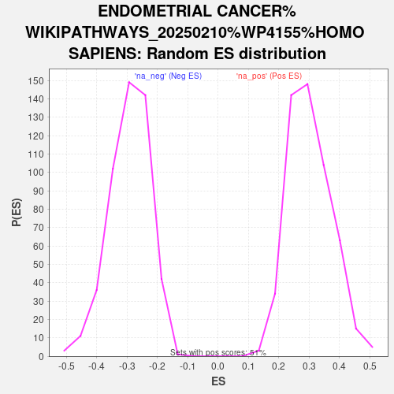

| | | Dataset | Tumour_vs_PDO |
| Phenotype | NoPhenotypeAvailable |
| Upregulated in class | na_pos |
| GeneSet | ENDOMETRIAL CANCER%WIKIPATHWAYS_20250210%WP4155%HOMO SAPIENS |
| Enrichment Score (ES) | 0.6508528 |
| Normalized Enrichment Score (NES) | 2.1428576 |
| Nominal p-value | 0.0 |
| FDR q-value | 0.0017739583 |
| FWER p-Value | 0.026 |
Table: GSEA Results Summary

Fig 1: Enrichment plot: ENDOMETRIAL CANCER%WIKIPATHWAYS_20250210%WP4155%HOMO SAPIENS
Profile of the Running ES Score & Positions of GeneSet Members on the Rank Ordered List
| SYMBOL | RANK IN GENE LIST | RANK METRIC SCORE | RUNNING ES | CORE ENRICHMENT | | 1 | CDKN1A | 273 | 1.407 | 0.0543 | Yes |
| 2 | HRAS | 520 | 1.159 | 0.0978 | Yes |
| 3 | DDB2 | 590 | 1.121 | 0.1498 | Yes |
| 4 | PIK3R2 | 632 | 1.097 | 0.2022 | Yes |
| 5 | GADD45A | 726 | 1.039 | 0.2486 | Yes |
| 6 | CTNNA1 | 760 | 1.024 | 0.2978 | Yes |
| 7 | PTEN | 912 | 0.956 | 0.3367 | Yes |
| 8 | ERBB2 | 967 | 0.934 | 0.3802 | Yes |
| 9 | TCF7L2 | 1061 | 0.899 | 0.4197 | Yes |
| 10 | CCND1 | 1489 | 0.765 | 0.4330 | Yes |
| 11 | BAD | 1635 | 0.729 | 0.4610 | Yes |
| 12 | BAX | 1642 | 0.727 | 0.4969 | Yes |
| 13 | APC2 | 1795 | 0.694 | 0.5227 | Yes |
| 14 | MAPK3 | 1981 | 0.653 | 0.5445 | Yes |
| 15 | RAF1 | 2028 | 0.646 | 0.5741 | Yes |
| 16 | KRAS | 2147 | 0.622 | 0.5982 | Yes |
| 17 | PIK3R3 | 2222 | 0.604 | 0.6241 | Yes |
| 18 | GSK3B | 2272 | 0.594 | 0.6509 | Yes |
| 19 | PDPK1 | 3572 | 0.406 | 0.5954 | No |
| 20 | CTNNB1 | 4288 | 0.327 | 0.5700 | No |
| 21 | MAPK1 | 5087 | 0.249 | 0.5360 | No |
| 22 | GADD45G | 6387 | 0.141 | 0.4673 | No |
| 23 | EGFR | 6417 | 0.139 | 0.4725 | No |
| 24 | MAP2K2 | 7420 | 0.071 | 0.4177 | No |
| 25 | PIK3CD | 7914 | 0.043 | 0.3911 | No |
| 26 | EGF | 8211 | 0.026 | 0.3751 | No |
| 27 | FOS | 8459 | 0.012 | 0.3613 | No |
| 28 | SOS1 | 10078 | -0.081 | 0.2710 | No |
| 29 | GADD45B | 10101 | -0.082 | 0.2738 | No |
| 30 | BRAF | 10107 | -0.083 | 0.2776 | No |
| 31 | SOS2 | 10158 | -0.087 | 0.2791 | No |
| 32 | GRB2 | 10357 | -0.100 | 0.2725 | No |
| 33 | ARAF | 10410 | -0.104 | 0.2747 | No |
| 34 | BAK1 | 10889 | -0.139 | 0.2537 | No |
| 35 | CASP9 | 11298 | -0.170 | 0.2384 | No |
| 36 | PIK3R1 | 11574 | -0.192 | 0.2320 | No |
| 37 | TCF7L1 | 12031 | -0.232 | 0.2170 | No |
| 38 | POLK | 12394 | -0.265 | 0.2091 | No |
| 39 | MAP2K1 | 12410 | -0.266 | 0.2215 | No |
| 40 | MYC | 12749 | -0.298 | 0.2167 | No |
| 41 | AKT3 | 16152 | -0.849 | 0.0607 | No |
Table: GSEA details [plain text format]

Fig 2: ENDOMETRIAL CANCER%WIKIPATHWAYS_20250210%WP4155%HOMO SAPIENS: Random ES distribution
Gene set null distribution of ES for ENDOMETRIAL CANCER%WIKIPATHWAYS_20250210%WP4155%HOMO SAPIENS